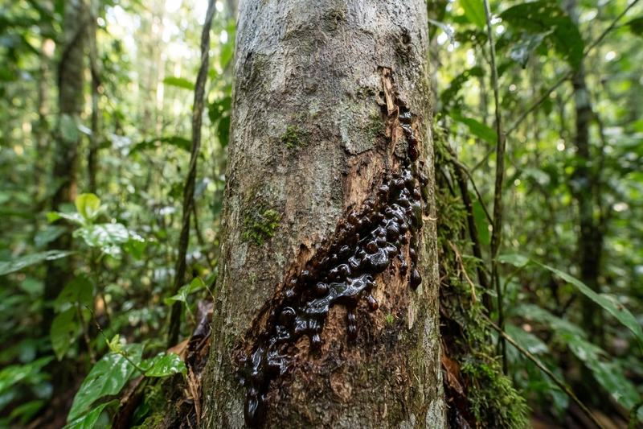

按 LY/T 2904-2017《沉香》，天然沉香是瑞香科沉香属树木在受伤后分泌树脂、与木质混合结成的。定义有两个条件，缺一不可：具备沉香源植物组织原本的构造；所分泌物在结香过程中自然生成、无外来添加。
注油、压缩、人工重组都会改变木质部原始构造，不符合这个定义。定义是分辨真假的法律依据，也是所有文章的起点。
不完全是。没有结香的白木香木材本身没有香味，和普通木头差不多。结香的部分，是树脂和木质的混合物：油脂越多，香味越浓，密度越大。
所以沉香木不等于沉香：沉香木是沉香属树木的木材，未结香就没有香味；沉香是结了香的那部分。买的时候问清楚，卖的是木还是香。
品香：电熏炉熏香、线香，是最常见的用法。佩戴：手串、挂件，贴身戴着闻香。
药用：药典有记载，入药用，有讲究，不建议自行服用（参考文章 47、53）。收藏：顶级老料有收藏价值，但收藏不等于理财（参考文章 48）。
惠安系：中南半岛和中国华南，清甜凉意、花香见长。星洲系：东南亚群岛，醇厚药香见长。
两个体系没有高下之分，先分清自己喜欢哪种香韵，再选产区。详细对比参考文章 11。
先读真假篇（文章 01-10）：学会分辨真假，是买沉香的第一步。再读产区篇（文章 11-22）：了解各产区香韵差异。
最后按需读保存、品香、选购篇。入门不用一次读完，遇到问题再回来查，这本图鉴就是干这个用的。
| 概念 | 是什么 | 常见误解 |
|---|---|---|
| 沉香 | 树受伤后结成的树脂与木质混合物 | 不是普通木头 |
| 沉香木 | 沉香属树木的木材本身，未结香没有香味 | 沉香木不等于沉香 |
| 奇楠 | 沉香里的特殊变异，油脂软、凉意明显 | 不是另一个物种 |